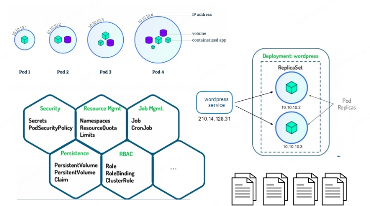
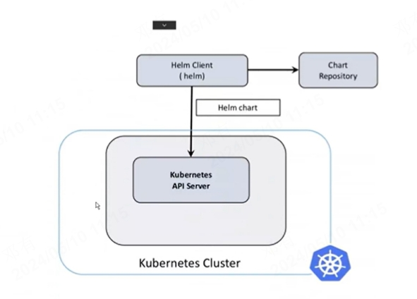
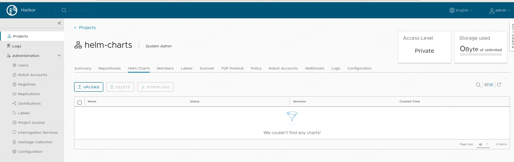
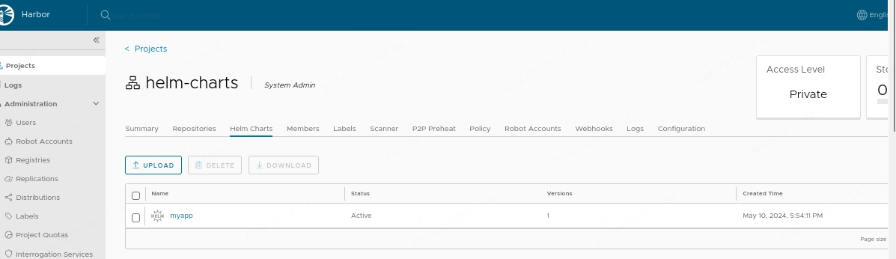

kubernetes包管理器
HelmV3
Helm介绍
官网 :
https://helm.sh/zh/docs/
当今软件开发，随着云原生技术得普及，我们的工程应用进行微服务和容器化的现象也越来越普遍。kubernetes 几乎成为了云原生服务编排绕不开的标准和技术。为了部署一个项目，我们需要多个清单如Deploy、Service、PV、PVC等定义资源如何运行，如何访问等。这是我们就需要有一个工具，高效的对这些资源进行整体管理，并且可以通过简单的修改进行高效复用。而Helm 就是这样的工具，有了Helm，我们可以像在linux中使用yum管理包工具一样，方便快捷的安装、管理、卸载k8s应用，高效的管理YAML资源清单集合，并可以通过配置一些简单的参数对资源进行复用。

Helm架构
Helm 基于go语言模板，用户只要提供规定的目录结构和模板文件，在真正部署时Helm模板引擎可以将其渲染成可用的k8s资源清单文件，并安装正确的顺序将他们部署到kubernetes集群中。

Charts：helm 包通过Chart格式来描述应用，类似于rpm包
Repository：用来存放和共享Chart的地方，类似于yum仓库
Release：：运行在kubernetes集群内的实例
Helm 作为k8s包管理软件，每次安装Charts到k8s集群时，helm client 查找repository或者使用版本的Charts使用REST+JSON的方式与API Server进行交互，进而管理deployment、service等资源，在k8s中会创建一个release。
Helm安装
~]# wget https://get.helm.sh/helm-v3.10.3-linux-amd64.tar.gz
~]# tar -xf helm-v3.10.3-linux-amd64.tar.gz
~]# mv linux-amd64/helm /usr/local/bin/
~]# helm version
version.BuildInfo{Version:"v3.10.3", GitCommit:"835b7334cfe2e5e27870ab3ed4135f136eecc704", GitTreeState:"clean", GoVersion:"go1.18.9"}
Helm命令
1.Helm 常见命令
| 命令 | 描述 |
|---|---|
| create | 创建一个chart并指定名字 |
| dependency | 管理chart依赖 |
| get | 下载一个release。可用子命令：all、hooks、manifest、notes、values |
| history | 获取release历史 |
| install | 安装一个chart |
| list | 列出release |
| package | 将chart目录打包到chart存档文件中 |
| pull | 从远程仓库中下载chart并解压到本地 # helm pull stable/mysql --untar |
| repo | 添加，列出，移除，更新和索引chart仓库。可用子命令：add、index、list、remove、update |
| rollback | 从之前版本回滚 |
| search | 根据关键字搜索chart。可用子命令：hub、repo |
| show | 查看chart详细信息。可用子命令：all、chart、readme、values |
| status | 显示已命名版本的状态 |
| template | 本地呈现模板 |
| uninstall | 卸载一个release |
| upgrade | 更新一个release |
| version | 查看helm客户端版本 |
2、配置国内Chart仓库
微软仓库（http://mirror.azure.cn/kubernetes/charts/）这个仓库强烈推荐，基本上官网有的chart这里都有。
阿里云仓库（https://kubernetes.oss-cn-hangzhou.aliyuncs.com/charts ）
官方仓库（https://hub.kubeapps.com/charts/incubator）官方chart仓库，国内有点不好使
bitnami： https://charts.bitnami.com/bitnami
// 添加存储库
~]# helm repo add stable http://mirror.azure.cn/kubernetes/charts
~]# helm repo add aliyun https://kubernetes.oss-cn-hangzhou.aliyuncs.com/charts
~]# helm repo add bitnami https://charts.bitnami.com/bitnami
~]# helm repo update
// 查看配置的存储库
~]# helm repo list
NAME URL
stable http://mirror.azure.cn/kubernetes/charts
aliyun https://kubernetes.oss-cn-hangzhou.aliyuncs.com/charts
~]# helm search repo aliyun
// 删除存储库
helm repo remove aliyun
Helm使用
1.在线方式部署MySQL
搜索charts
~]# helm search repo mysql
NAME CHART VERSION APP VERSION DESCRIPTION
aliyun/mysql 0.3.5 Fast, reliable, scalable, and easy to use open-...
bitnami/mysql 10.2.2 8.0.37 MySQL is a fast, reliable, scalable, and easy t...
stable/mysql 1.6.9 5.7.30 DEPRECATED - Fast, reliable, scalable, and easy...
查看charts
helm show values stable/mysql
部署charts
~]# helm install stable/mysql --generate-name --set persistence.storageClass=nfs-client --set mysqlRootPassword=rootpwd123
NAME: mysql-1715325658
LAST DEPLOYED: Fri May 10 15:21:00 2024
NAMESPACE: default
STATUS: deployed
REVISION: 1
NOTES:
MySQL can be accessed via port 3306 on the following DNS name from within your cluster:
mysql-1715325658.default.svc.cluster.local
To get your root password run:
MYSQL_ROOT_PASSWORD=$(kubectl get secret --namespace default mysql-1715325658 -o jsonpath="{.data.mysql-root-password}" | base64 --decode; echo)
To connect to your database:
1. Run an Ubuntu pod that you can use as a client:
kubectl run -i --tty ubuntu --image=ubuntu:16.04 --restart=Never -- bash -il
2. Install the mysql client:
$ apt-get update && apt-get install mysql-client -y
3. Connect using the mysql cli, then provide your password:
$ mysql -h mysql-1715325658 -p
To connect to your database directly from outside the K8s cluster:
MYSQL_HOST=127.0.0.1
MYSQL_PORT=3306
# Execute the following command to route the connection:
kubectl port-forward svc/mysql-1715325658 3306
mysql -h ${MYSQL_HOST} -P${MYSQL_PORT} -u root -p${MYSQL_ROOT_PASSWORD}
一个 chart 包是可以多次安装到同一个集群中的，每次安装都会产生一个release, 每个release都可以独立管理和升级
查看release状态
~]# helm list
NAME NAMESPACE REVISION UPDATED STATUS CHART APP VERSION
mysql-1715325658 default 1 2024-05-10 15:21:00.090494201 +0800 CST deployed mysql-1.6.9 5.7.30
~]# kubectl get pod
NAME READY STATUS RESTARTS AGE
mysql-1715325658-7b754bdfc8-v72wd 1/1 Running 0 3m15s
nfs-client-provisioner-685df7bcc5-927kh 1/1 Running 2 (16m ago) 27m
~]# kubectl get pv
NAME CAPACITY ACCESS MODES RECLAIM POLICY STATUS CLAIM STORAGECLASS REASON AGE
pvc-320c40f4-9f72-47e8-8461-2550f88246dd 8Gi RWO Delete Bound default/mysql-1715325658 nfs-client 3m18s
~]# kubectl get pvc
NAME STATUS VOLUME CAPACITY ACCESS MODES STORAGECLASS AGE
mysql-1715325658 Bound pvc-320c40f4-9f72-47e8-8461-2550f88246dd 8Gi RWO nfs-client 3m21s
~]# kubectl get svc
NAME TYPE CLUSTER-IP EXTERNAL-IP PORT(S) AGE
kubernetes ClusterIP 10.96.0.1 <none> 443/TCP 3d5h
mysql-1715325658 ClusterIP 10.111.120.197 <none> 3306/TCP 3m24s
删除Release
uninstall
delete
~]# helm del mysql-1715325658
# 在删除的时候使用 --keep-history 参数，则会保留 release 的历史记录，该 release 的状态就是 UNINSTALLED，
~]# helm uninstall mysql-1715326296 --keep-history
release "mysql-1715326296" uninstalled
[root@k8s-master-01 ~]# helm ls -a
NAME NAMESPACE REVISION UPDATED STATUS CHART APP VERSION
mysql-1715326296 default 1 2024-05-10 15:31:37.691519366 +0800 CST uninstalled mysql-1.6.9 5.7.30
# 取消删除release
~]# helm rollback mysql-1715326296 1
Rollback was a success! Happy Helming!
~]# helm list
NAME NAMESPACE REVISION UPDATED STATUS CHART APP VERSION
mysql-1715326296 default 2 2024-05-10 15:33:42.513180988 +0800 CST deployed mysql-1.6.9 5.7.30
2.定制参数
~]# helm search repo mysql
NAME CHART VERSION APP VERSION DESCRIPTION
stable/mysql 1.6.9 5.7.30 DEPRECATED - Fast, reliable, scalable, and easy...
拉取charts到本地并解压
~]# helm pull stable/mysql --version=1.6.9 --untar
定制values.yaml
~]# cd mysql/
mysql]# cp values.yaml values.yaml.bak
# 配置values.yaml如下：
mysql]# diff values.yaml values.yaml.bak
24c24
< mysqlRootPassword: root123456
---
> # mysqlRootPassword: testing
113c113
< storageClass: "nfs-client"
---
> # storageClass: "-"
190c190
< type: NodePort
---
> type: ClusterIP
192c192
< nodePort: 30306
---
> # nodePort: 32000
部署charts
mysql]# helm install mydb -f values.yaml .
mysql]# kubectl get all -l release=mydb
NAME READY STATUS RESTARTS AGE
pod/mydb-mysql-85cc8cc89-rdbfr 1/1 Running 0 2m32s
NAME TYPE CLUSTER-IP EXTERNAL-IP PORT(S) AGE
service/mydb-mysql NodePort 10.103.114.249 <none> 3306:30306/TCP 2m32s
NAME READY UP-TO-DATE AVAILABLE AGE
deployment.apps/mydb-mysql 1/1 1 1 2m32s
NAME DESIRED CURRENT READY AGE
replicaset.apps/mydb-mysql-85cc8cc89 1 1 1 2m32s
查看覆盖的参数
mysql]# helm get values mydb
...
persistence:
accessMode: ReadWriteOnce
annotations: {}
enabled: true
size: 8Gi
storageClass: nfs-client
3.升级和回滚
1.升级
新版本的 chart 包发布的时候，或者当你要更改 release 的配置的时候，你可以使用 helm upgrade 命令来操作。升级需要一个现有的 release，并根据提供的信息对其进行升级。因为 Kubernetes charts 可能很大而且很复杂，Helm 会尝试以最小的侵入性进行升级，它只会更新自上一版本以来发生的变化：
升级前查看版本
mysql]# mysql -uroot -h 192.168.122.21 -P 30306 -p'root123456' -e "select version()"
+-----------+
| version() |
+-----------+
| 5.7.30 |
+-----------+
mysql]# kubectl get deployment mydb-mysql -o wide
NAME READY UP-TO-DATE AVAILABLE AGE CONTAINERS IMAGES SELECTOR
mydb-mysql 1/1 1 1 11m mydb-mysql mysql:5.7.30 app=mydb-mysql,release=mydb
升级镜像为5.7.31
mysql]# helm upgrade mydb -f values.yaml --set imageTag=5.7.31 .
升级后确认
mysql]# mysql -uroot -h 192.168.122.21 -P 30306 -p'root123456' -e "select version()"
+-----------+
| version() |
+-----------+
| 5.7.31 |
+-----------+
mysql]# kubectl get deployment mydb-mysql -o wide
NAME READY UP-TO-DATE AVAILABLE AGE CONTAINERS IMAGES SELECTOR
mydb-mysql 1/1 1 1 15m mydb-mysql mysql:5.7.31 app=mydb-mysql,release=mydb
2.回滚
mysql]# helm history mydb
REVISION UPDATED STATUS CHART APP VERSION DESCRIPTION
1 Fri May 10 15:42:50 2024 superseded mysql-1.6.9 5.7.30 Install complete
2 Fri May 10 15:56:38 2024 deployed mysql-1.6.9 5.7.30 Upgrade complete
mysql]# helm rollback mydb 1
Rollback was a success! Happy Helming!
mysql]# kubectl get deployment mydb-mysql -o wide
NAME READY UP-TO-DATE AVAILABLE AGE CONTAINERS IMAGES SELECTOR
mydb-mysql 0/1 1 0 16m mydb-mysql mysql:5.7.30 app=mydb-mysql,release=mydb
mysql]# helm history mydb
REVISION UPDATED STATUS CHART APP VERSION DESCRIPTION
1 Fri May 10 15:42:50 2024 superseded mysql-1.6.9 5.7.30 Install complete
2 Fri May 10 15:56:38 2024 superseded mysql-1.6.9 5.7.30 Upgrade complete
3 Fri May 10 15:59:18 2024 deployed mysql-1.6.9 5.7.30 Rollback to 1
Charts开发
1.Charts目录结构
~]# helm create myapp
~]# tree myapp/
~]# tree myapp
myapp
├── charts
├── Chart.yaml
├── templates
│ ├── deployment.yaml
│ ├── _helpers.tpl
│ ├── hpa.yaml
│ ├── ingress.yaml
│ ├── NOTES.txt
│ ├── serviceaccount.yaml
│ ├── service.yaml
│ └── tests
│ └── test-connection.yaml
└── values.yaml
| 文件 | 说明 | 备注 |
|---|---|---|
| Chart.yaml | 用于描述Chart的基本信息; | 通过 helm show chart myapp 查看 |
| values.yaml | Chart的默认配置文件; | 通过 helm show values myapp/ 查看 |
| README.md | [可选] 当前Chart的介绍 | |
| LICENS | [可选] 协议 | |
| requirements.yaml | [可选] 用于存放当前Chart依赖的其它Chart的说明文件 | |
| charts/ | [可选]: 该目录中放置当前Chart依赖的其它Chart | |
| templates/ | [可选]: 部署文件模版目录 |
2.Charts预定义变量
| 变量名 | 解释 |
|---|---|
| Release.Name | 发布的名称（不是chart） |
| Release.Time | chart发布上次更新的时间。这将匹配Last ReleasedRelease对象上的时间 |
| Release.Namespace | chart发布到的名称空间 |
| Release.Service | 进行发布的服务 |
| Release.IsUpgrade | 如果当前操作是升级或回滚，则设置为true |
| Release.IsInstall | 如果当前操作是安装，则设置为true |
| Release.Revision | 修订号。它从1开始，每个都递增helm upgrade |
| Chart | 内容Chart.yaml |
| Files | 类似于chart的对象 |
| Capabilities | 类似于地图的对象，包含有关Kubernetes（{{.Capabilities.KubeVersion}} |
3.开发Chart
a.定义Charts描述信息
vim myapp/Chart.yaml
apiVersion: v2
name: myapp
description: A Helm chart for Kubernetes.
type: application
version: 0.0.1
appVersion: "1.16.0"
b.定义deployment.yaml模板
vim myapp/templates/deployment.yaml
apiVersion: apps/v1
kind: Deployment
metadata:
name: {{ include "myapp.fullname" . }}
labels:
{{- include "myapp.labels" . | nindent 4 }}
spec:
{{- if not .Values.autoscaling.enabled }}
replicas: {{ .Values.replicaCount }}
{{- end }}
selector:
matchLabels:
{{- include "myapp.selectorLabels" . | nindent 6 }}
template:
metadata:
{{- with .Values.podAnnotations }}
annotations:
{{- toYaml . | nindent 8 }}
{{- end }}
labels:
{{- include "myapp.selectorLabels" . | nindent 8 }}
spec:
{{- with .Values.imagePullSecrets }}
imagePullSecrets:
{{- toYaml . | nindent 8 }}
{{- end }}
serviceAccountName: {{ include "myapp.serviceAccountName" . }}
securityContext:
{{- toYaml .Values.podSecurityContext | nindent 8 }}
containers:
- name: {{ .Chart.Name }}
securityContext:
{{- toYaml .Values.securityContext | nindent 12 }}
image: "{{ .Values.image.repository }}:{{ .Values.image.tag | default .Chart.AppVersion }}"
imagePullPolicy: {{ .Values.image.pullPolicy }}
ports:
- name: http
containerPort: {{ .Values.service.port }}
protocol: TCP
livenessProbe:
httpGet:
path: /
port: http
readinessProbe:
httpGet:
path: /
port: http
resources:
{{- toYaml .Values.resources | nindent 12 }}
{{- with .Values.nodeSelector }}
nodeSelector:
{{- toYaml . | nindent 8 }}
{{- end }}
{{- with .Values.affinity }}
affinity:
{{- toYaml . | nindent 8 }}
{{- end }}
{{- with .Values.tolerations }}
tolerations:
{{- toYaml . | nindent 8 }}
{{- end }}
c.定义service.yaml模板
~]# cat myapp/templates/service.yaml
apiVersion: v1
kind: Service
metadata:
name: {{ include "myapp.fullname" . }}
labels:
{{- include "myapp.labels" . | nindent 4 }}
spec:
type: {{ .Values.service.type }}
ports:
- port: {{ .Values.service.port }}
targetPort: http
protocol: TCP
name: http
selector:
{{- include "myapp.selectorLabels" . | nindent 4 }}
d.定义ingress.yaml模板(可选)
~]# cat myapp/templates/service.yaml
apiVersion: v1
kind: Service
metadata:
name: {{ include "myapp.fullname" . }}
labels:
{{- include "myapp.labels" . | nindent 4 }}
spec:
type: {{ .Values.service.type }}
ports:
- port: {{ .Values.service.port }}
targetPort: http
protocol: TCP
name: http
selector:
{{- include "myapp.selectorLabels" . | nindent 4 }}
[root@k8s-master-01 ~]# cat myapp/templates/ingress.yaml
{{- if .Values.ingress.enabled -}}
{{- $fullName := include "myapp.fullname" . -}}
{{- $svcPort := .Values.service.port -}}
{{- if and .Values.ingress.className (not (semverCompare ">=1.18-0" .Capabilities.KubeVersion.GitVersion)) }}
{{- if not (hasKey .Values.ingress.annotations "kubernetes.io/ingress.class") }}
{{- $_ := set .Values.ingress.annotations "kubernetes.io/ingress.class" .Values.ingress.className}}
{{- end }}
{{- end }}
{{- if semverCompare ">=1.19-0" .Capabilities.KubeVersion.GitVersion -}}
apiVersion: networking.k8s.io/v1
{{- else if semverCompare ">=1.14-0" .Capabilities.KubeVersion.GitVersion -}}
apiVersion: networking.k8s.io/v1beta1
{{- else -}}
apiVersion: extensions/v1beta1
{{- end }}
kind: Ingress
metadata:
name: {{ $fullName }}
labels:
{{- include "myapp.labels" . | nindent 4 }}
{{- with .Values.ingress.annotations }}
annotations:
{{- toYaml . | nindent 4 }}
{{- end }}
spec:
{{- if and .Values.ingress.className (semverCompare ">=1.18-0" .Capabilities.KubeVersion.GitVersion) }}
ingressClassName: {{ .Values.ingress.className }}
{{- end }}
{{- if .Values.ingress.tls }}
tls:
{{- range .Values.ingress.tls }}
- hosts:
{{- range .hosts }}
- {{ . | quote }}
{{- end }}
secretName: {{ .secretName }}
{{- end }}
{{- end }}
rules:
{{- range .Values.ingress.hosts }}
- host: {{ .host | quote }}
http:
paths:
{{- range .paths }}
- path: {{ .path }}
{{- if and .pathType (semverCompare ">=1.18-0" $.Capabilities.KubeVersion.GitVersion) }}
pathType: {{ .pathType }}
{{- end }}
backend:
{{- if semverCompare ">=1.19-0" $.Capabilities.KubeVersion.GitVersion }}
service:
name: {{ $fullName }}
port:
number: {{ $svcPort }}
{{- else }}
serviceName: {{ $fullName }}
servicePort: {{ $svcPort }}
{{- end }}
{{- end }}
{{- end }}
{{- end }}
e.配置value.yaml
~]# cat myapp/values.yaml
# Default values for myapp.
# This is a YAML-formatted file.
# Declare variables to be passed into your templates.
replicaCount: 1
image:
repository: nginx
pullPolicy: IfNotPresent
# Overrides the image tag whose default is the chart appVersion.
tag: ""
imagePullSecrets: []
nameOverride: ""
fullnameOverride: ""
serviceAccount:
# Specifies whether a service account should be created
create: true
# Annotations to add to the service account
annotations: {}
# The name of the service account to use.
# If not set and create is true, a name is generated using the fullname template
name: ""
podAnnotations: {}
podSecurityContext: {}
# fsGroup: 2000
securityContext: {}
# capabilities:
# drop:
# - ALL
# readOnlyRootFilesystem: true
# runAsNonRoot: true
# runAsUser: 1000
service:
type: ClusterIP
port: 80
ingress:
enabled: false
className: ""
annotations: {}
# kubernetes.io/ingress.class: nginx
# kubernetes.io/tls-acme: "true"
hosts:
- host: chart-example.local
paths:
- path: /
pathType: ImplementationSpecific
tls: []
# - secretName: chart-example-tls
# hosts:
# - chart-example.local
resources: {}
# We usually recommend not to specify default resources and to leave this as a conscious
# choice for the user. This also increases chances charts run on environments with little
# resources, such as Minikube. If you do want to specify resources, uncomment the following
# lines, adjust them as necessary, and remove the curly braces after 'resources:'.
# limits:
# cpu: 100m
# memory: 128Mi
# requests:
# cpu: 100m
# memory: 128Mi
autoscaling:
enabled: false
minReplicas: 1
maxReplicas: 100
targetCPUUtilizationPercentage: 80
# targetMemoryUtilizationPercentage: 80
nodeSelector: {}
tolerations: []
affinity: {}
f.查看模板渲染后的YAML
~]# helm install myapp myapp/ --dry-run
NAME: myapp
LAST DEPLOYED: Fri May 10 16:40:45 2024
NAMESPACE: default
STATUS: pending-install
REVISION: 1
HOOKS:
---
# Source: myapp/templates/tests/test-connection.yaml
apiVersion: v1
kind: Pod
metadata:
name: "myapp-test-connection"
labels:
helm.sh/chart: myapp-0.1.0
app.kubernetes.io/name: myapp
app.kubernetes.io/instance: myapp
app.kubernetes.io/version: "1.16.0"
app.kubernetes.io/managed-by: Helm
annotations:
"helm.sh/hook": test
spec:
containers:
- name: wget
image: busybox
command: ['wget']
args: ['myapp:80']
restartPolicy: Never
MANIFEST:
---
# Source: myapp/templates/serviceaccount.yaml
apiVersion: v1
kind: ServiceAccount
metadata:
name: myapp
labels:
helm.sh/chart: myapp-0.1.0
app.kubernetes.io/name: myapp
app.kubernetes.io/instance: myapp
app.kubernetes.io/version: "1.16.0"
app.kubernetes.io/managed-by: Helm
---
# Source: myapp/templates/service.yaml
apiVersion: v1
kind: Service
metadata:
name: myapp
labels:
helm.sh/chart: myapp-0.1.0
app.kubernetes.io/name: myapp
app.kubernetes.io/instance: myapp
app.kubernetes.io/version: "1.16.0"
app.kubernetes.io/managed-by: Helm
spec:
type: ClusterIP
ports:
- port: 80
targetPort: http
protocol: TCP
name: http
selector:
app.kubernetes.io/name: myapp
app.kubernetes.io/instance: myapp
---
# Source: myapp/templates/deployment.yaml
apiVersion: apps/v1
kind: Deployment
metadata:
name: myapp
labels:
helm.sh/chart: myapp-0.1.0
app.kubernetes.io/name: myapp
app.kubernetes.io/instance: myapp
app.kubernetes.io/version: "1.16.0"
app.kubernetes.io/managed-by: Helm
spec:
replicas: 1
selector:
matchLabels:
app.kubernetes.io/name: myapp
app.kubernetes.io/instance: myapp
template:
metadata:
labels:
app.kubernetes.io/name: myapp
app.kubernetes.io/instance: myapp
spec:
serviceAccountName: myapp
securityContext:
{}
containers:
- name: myapp
securityContext:
{}
image: "nginx:1.16.0"
imagePullPolicy: IfNotPresent
ports:
- name: http
containerPort: 80
protocol: TCP
livenessProbe:
httpGet:
path: /
port: http
readinessProbe:
httpGet:
path: /
port: http
resources:
{}
NOTES:
1. Get the application URL by running these commands:
export POD_NAME=$(kubectl get pods --namespace default -l "app.kubernetes.io/name=myapp,app.kubernetes.io/instance=myapp" -o jsonpath="{.items[0].metadata.name}")
export CONTAINER_PORT=$(kubectl get pod --namespace default $POD_NAME -o jsonpath="{.spec.containers[0].ports[0].containerPort}")
echo "Visit http://127.0.0.1:8080 to use your application"
kubectl --namespace default port-forward $POD_NAME 8080:$CONTAINER_PORT
g.部署myapp
~]# helm install myapp myapp/ -n test
NAME: myapp
LAST DEPLOYED: Fri May 10 16:42:40 2024
NAMESPACE: test
STATUS: deployed
REVISION: 1
NOTES:
1. Get the application URL by running these commands:
export POD_NAME=$(kubectl get pods --namespace test -l "app.kubernetes.io/name=myapp,app.kubernetes.io/instance=myapp" -o jsonpath="{.items[0].metadata.name}")
export CONTAINER_PORT=$(kubectl get pod --namespace test $POD_NAME -o jsonpath="{.spec.containers[0].ports[0].containerPort}")
echo "Visit http://127.0.0.1:8080 to use your application"
kubectl --namespace test port-forward $POD_NAME 8080:$CONTAINER_PORT
~]# helm ls -n test
NAME NAMESPACE REVISION UPDATED STATUS CHART APP VERSION
myapp test 1 2024-05-10 16:42:40.202562735 +0800 CST deployed myapp-0.1.0 1.16.0
Chart包托管
前提： 托管Chart包到Habro仓库，Harbor仓库安装时需支持chart,实例代码：
./install.sh --with-chartmuseum

~]# docker login reg.linux.io -uadmin -padmin123
1.安装push插件
~]# yum install -y git
~]# helm plugin install https://github.com/chartmuseum/helm-push
~]# helm plugin install https://github.com/chartmuseum/helm-push
Downloading and installing helm-push v0.10.4 ...
https://github.com/chartmuseum/helm-push/releases/download/v0.10.4/helm-push_0.10.4_linux_amd64.tar.gz
Installed plugin: cm-push
~]# ls /root/.local/share/helm/plugins/helm-push/bin/
helm-cm-push
2.打包应用
~]# cd myapp/
myapp]# ls
charts Chart.yaml templates values.yaml
myapp]# helm package .
Successfully packaged chart and saved it to: /root/myapp/myapp-0.1.0.tgz
3.添加harbor为helm仓库
~]# cd /etc/docker/certs.d/reg.linux.io
reg.linux.io]# helm repo add --ca-file ca.crt \
--cert-file reg.linux.io.cert \
--key-file reg.linux.io.key \
--username admin --password admin123 \
helmharbor https://reg.linux.io/chartrepo/helm-charts
helm-charts :项目名
4.推送charts到Harbor
reg.linux.io]# helm cm-push --ca-file ca.crt \
--cert-file reg.linux.io.cert \
--key-file reg.linux.io.key \
--username admin --password admin123 \
/root/myapp/myapp-0.1.0.tgz helmharbor

5.使用charts
reg.linux.io]# helm install --ca-file ca.crt \
--cert-file reg.linux.io.cert \
--key-file reg.linux.io.key \
--username admin --password admin123 \
--version 0.1.0 helmharbor/myapp